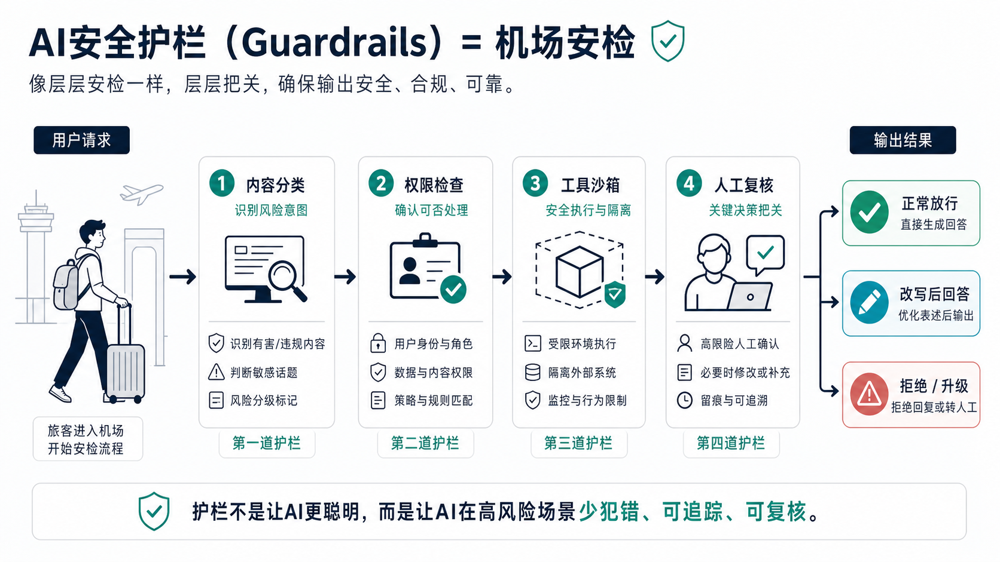
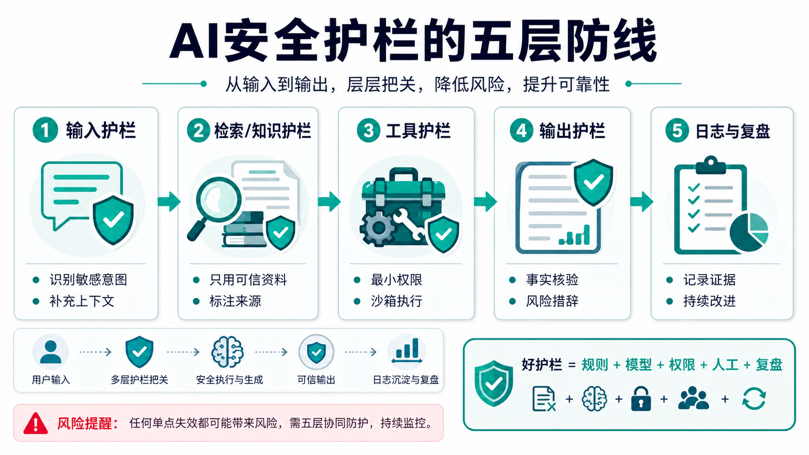

为什么这个概念重要？
AI安全护栏解决的是一个朴素但关键的问题：当 AI 越来越会回答、会搜索、会调用工具时，我们怎样让它在高风险场景里少犯错、少越权、出问题后还能追踪和复盘？
没有护栏的 AI，就像一个很聪明但没有流程意识的实习生：它可能知道很多，也可能因为一句模糊指令就给出危险建议、泄露信息，或调用了不该调用的工具。
护栏不是让 AI 变得更聪明，而是给 AI 的输入、资料、工具、输出和事后记录加上安全边界。它让 AI 产品从“能用”走向“可控、可审计、可上线”。
一个直观类比：机场安检

想象你要坐飞机。机场并不是不信任每个旅客，而是知道飞行是高风险系统，所以必须层层把关：看证件、查行李、过安检、异常情况转人工。
AI护栏也是这样。用户请求进来后，系统会先判断意图是否敏感，再检查权限是否足够；如果要调用工具，就放进受限环境；如果输出有风险，就改写、拒绝或转给人处理。
这套机制的重点不是“每个人都危险”，而是承认系统总会遇到边界情况。好护栏让大多数正常请求顺畅通过，也让高风险请求被及时拦住。
工作原理：护栏怎样让 AI 更可靠？

第一层是输入护栏。它检查用户请求是否涉及隐私、违法、医疗、金融、暴力、自伤或越权操作，并在信息不足时要求补充背景。
第二层是知识护栏。AI 不是随便使用任何材料，而是优先检索可信资料、记录来源，并限制模型把不确定内容说得太肯定。
第三层是工具护栏。AI 调用邮箱、数据库、浏览器或支付系统时，必须遵守最小权限、沙箱执行、关键动作确认和失败回滚。
第四层是输出护栏。系统会检查回答是否包含危险指导、隐私泄露、未经证实的事实或过度承诺，必要时改写、拒绝或转人工。
第五层是日志与复盘。每一次高风险拦截、人工接管和用户反馈都应该被记录，成为下一轮改进、评测和红队测试的材料。
关键术语解释
| 术语 | 专业解释 | 白话解释 |
|---|---|---|
| 护栏 | 专业解释：围绕 AI 输入、检索、工具、输出和监控建立的风险控制机制。 | 白话解释：给 AI 装上规则、权限和刹车，避免它想怎么答就怎么答。 |
| 策略规则 | 专业解释：系统预先定义的允许、限制、拒绝和升级条件。 | 白话解释：提前写好的红绿灯，告诉 AI 哪些事能做、哪些事不能做。 |
| 最小权限 | 专业解释：工具或账号只获得完成任务所必需的最低访问能力。 | 白话解释：让 AI 只拿需要的钥匙，不把整栋楼的钥匙都交给它。 |
| 人工复核 | 专业解释：高风险或不确定请求由人类审查、批准或接管。 | 白话解释：遇到关键决策时，别让 AI 自己拍板，要请人看一眼。 |
| 审计日志 | 专业解释：记录请求、判断、工具调用、输出和拦截结果的可追踪证据。 | 白话解释：像监控录像和操作记录，事后能查清 AI 为什么这么做。 |
真实应用案例：企业 AI 助手处理报销
假设公司上线一个 AI 助手，员工可以让它查询报销制度、填写表单、读取发票、提交审批。没有护栏时，它可能把别人的报销记录发给错误的人，或者在信息不完整时直接提交。
有护栏后，流程会变成：先确认员工身份和部门权限；只检索公司批准的制度文档；读取发票时只访问当前任务需要的字段；提交前让用户确认；异常金额或敏感信息自动转人工。
这就是护栏的现实意义。它不只是“内容安全过滤器”，而是把 AI 放进企业流程里时必须具备的权限控制、事实校验、人工审批和事后审计。
常见误区
- 误区一：护栏就是关键词过滤。
关键词过滤只是很粗的一种方式。真正的护栏还包括上下文判断、权限控制、工具沙箱、事实核验和人工复核。 - 误区二：护栏越多，AI 越安全。
不一定。过多护栏会让正常任务卡住，甚至让用户绕开系统。好护栏要区分风险等级，而不是一刀切。 - 误区三：有护栏就不需要红队测试。
相反，红队测试会不断挑战护栏，帮助团队发现规则漏洞、权限漏洞和绕过方式。 - 误区四：护栏只适合聊天机器人。
不对。AI 搜索、客服、代码助手、企业 Agent、医疗问答、金融助手和机器人都需要不同类型的护栏。
3句话总结
- AI安全护栏的本质，是在输入、知识、工具、输出和复盘环节给 AI 加上边界。
- 它不是让 AI 更聪明，而是让 AI 在高风险场景里更可控、更可追踪、更适合真实上线。
- 理解护栏，能帮助普通人看懂为什么企业 AI 不能只追求能力，还必须重视权限、流程和责任。
复习问题
- 为什么“关键词过滤”不能代表完整的 AI 安全护栏？
- 如果一个 AI 助手可以帮你发邮件，至少应该给它加哪几类护栏？
- 为什么好护栏既要拦住高风险请求，又不能把所有正常请求都挡住？